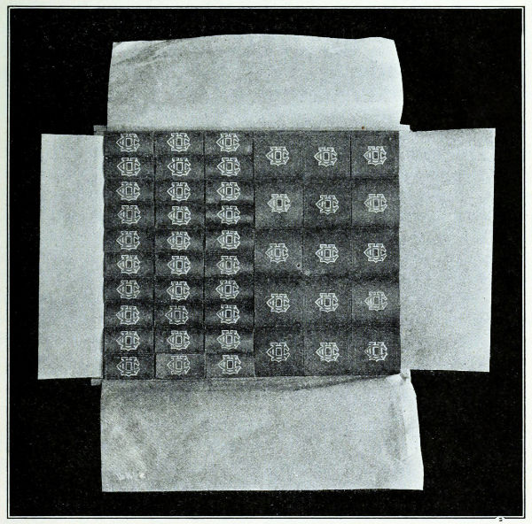
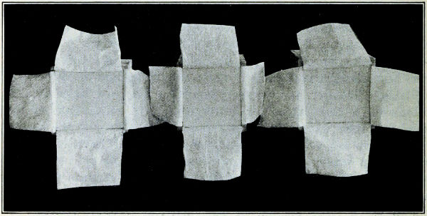
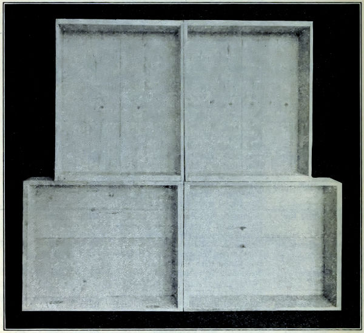
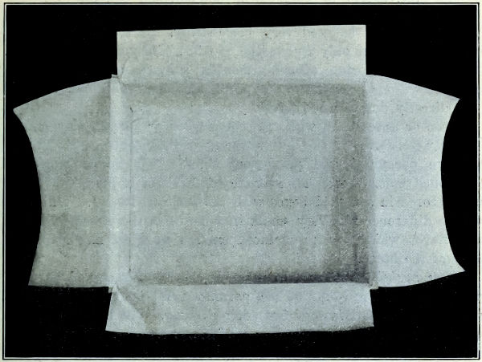
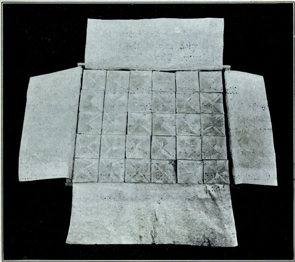

UNIVERSITY OF CALIFORNIA PUBLICATIONS
COLLEGE OF AGRICULTURE
AGRICULTURAL EXPERIMENT STATION
BERKELEY, CALIFORNIA
COMPARISON OF WOODS FOR BUTTER BOXES
By G. D. TURNBOW

BULLETIN No. 369
August, 1923
UNIVERSITY OF CALIFORNIA PRESS
BERKELEY
1923
by
G. D. TURNBOW
Butter boxes used in shipping and storing butter in California, are usually made of spruce which is largely shipped in from other states particularly from Washington and Oregon.
With the recent war, however, there came an acute shortage of spruce on the Pacific Coast with a corresponding increase in price. The commercial manufacturers did some work in an attempt to find a substitute for spruce, but the trade did not readily accept a change. There was a demand from both the lumber and the butter interests for investigation to find a suitable substitute for spruce.
The production of spruce is somewhat limited in California, but there is an abundance of white fir and a limited amount of cottonwood available. However, the creamerymen have not used white fir and cottonwood to any extent for butter containers, on account of the belief that these materials would impart a wood flavor to the butter.
Inasmuch as nearly all of the butter made in this State is shipped or stored in wooden containers, the use of white fir or cottonwood, would mean first, a material saving to the butter manufacturers in marketing expense, and second, an opportunity for the lumber interests to use a large amount of raw material already available in California, which heretofore had been of little commercial value or use.
The volatile fats in butter have the property of absorbing odors, which often results in an undesirable flavor. Great care then must be exercised in keeping butter from coming in contact with materials that will impart a foreign flavor. Butter need be exposed to foreign odors only a short length of time before the flavor is permanently affected.
Experiments[1] were conducted, therefore, to determine whether white fir or cottonwood would impart a flavor to the butter and also to determine the possibility of storing butter in cubes and marketing it in 60-pound cases when these woods were used.
The butter for cold storage was packed in white fir, cottonwood, and spruce containers holding ten pounds each. Both seasoned and unseasoned woods were used in each of the three methods of packing.

The first set packed with butter were plain unseasoned boxes of each of the woods. The second set had the inner surface paraffined before packing. The method of paraffining was to invert the box over a steam jet and steam thoroughly. This served a double purpose in that it opened the pores of the wood and allowed the paraffin to penetrate, and the heated surface of the wood kept the paraffin in a liquid condition so that it could be put on in a thinner coat than if the paraffin had been applied to a cold surface. After the boxes had been allowed to drain, the inside was then painted with paraffin at 240° F. This method gave a complete covering to the wood, a result which is not always obtained by some of the commercial paraffin atomizers. The third set was paraffined as above and, in addition, lined with good parchment paper so that no butter could come in contact with either wood or paraffin (fig. 1). Twenty-three 10-pound boxes were packed in the three ways.
They were filled with the butter from one churning which scored 92½ after being chilled for 24 hours at 50° F. and were shipped immediately after the first scoring to a cold storage plant in San Francisco and stored at a temperature of 12° F. The butter was scored monthly for six months. The summary of the scoring is given in table 1.
|
TABLE 1 Influence of Various Woods on Cube Butter in Storage [2] |
||||||
| No. of sample |
Kind of wood |
How treated | First score |
Lowest score |
Average of all scores |
Average score of butter in same kind of box |
| 1 | White Fir | Unseasoned No Paraffin No Parchment |
92.5 | 89 | 90.857 | |
| 2 | Cottonwood | Unseasoned No Paraffin No Parchment |
92.5 | 86 | 89.214 | |
| 3 | Spruce | Unseasoned No Paraffin No Parchment |
92.5 | 88 | 90.785 | |
| 4 | Spruce | Seasoned Paraffin No Parchment |
92.5 | 89 | 90.642 | |
| 6 | White Fir | Seasoned Paraffin No Parchment |
92.5 | 90 | 90.857 | |
| 7 | Cottonwood | Seasoned Paraffin No Parchment |
92.5 | 87 | 89.571 | |
| 5 | Cottonwood | Unseasoned Paraffin No Parchment |
92.5 | 88 | 89.857 | |
| 8 | Spruce | Unseasoned Paraffin No Parchment |
92.5 | 90 | 90.928 | |
| 9 | White Fir | Unseasoned Paraffin No Parchment |
92.5 | 89 | 90.571 | |
| 10 | Cottonwood | Unseasoned Paraffin Parchment |
92.5 | 91.0 | 91.714 | |
| 11 | Cottonwood | Unseasoned Paraffin Parchment |
92.5 | 89.0 | 90.571 | 91.142 |
| 18 | Cottonwood | Unseasoned Paraffin Parchment |
92.5 | 89.0 | 91.142 | |
| 12 | Spruce | Unseasoned Paraffin Parchment |
92.5 | 90.5 | 91.5 | |
| 13 | Spruce | Unseasoned Paraffin Parchment |
92.5 | 91.0 | 91.571 | 91.333 |
| 14 | Spruce | Unseasoned Paraffin Parchment |
92.5 | 90.0 | 90.928 | |
| 15 [6] | White Fir | Unseasoned Paraffin Parchment |
92.5 | 89.0 | 90.928 | 91.107 |
| 16 | White Fir | Unseasoned | 92.5 | 90.0 | 91.285 | |
| 17 | White Fir | Seasoned Paraffin Parchment |
92.5 | 89.0 | 90.857 | 91.142 |
| 20 | White Fir | Seasoned Paraffin Parchment |
92.5 | 90.5 | 91.428 | |
| 19 | Cottonwood | Seasoned Paraffin Parchment |
92.5 | 90.5 | 91.571 | |
| 21 | Spruce | Seasoned Paraffin Parchment |
92.5 | 90.0 | 91.214 | |
| 22 | Spruce | Seasoned Paraffin Parchment |
92.5 | 90.0 | 91.571 | 91.523 |
| 23 | Spruce | Seasoned Paraffin Parchment |
92.5 | 91.0 | 91.785 | |
The butter for market was cut into two-pound squares, wrapped and packed in 60-pound containers, made of white fir, cottonwood and spruce (figs. 2, 3 and 4). The butter was stored in a cold room, the temperature of which ranged from 48° to 50° F. It was held in storage twenty-eight days, which is within two days of the maximum time butter may be held and still sold as fresh butter. Butter held over thirty days must be labeled “storage butter.” The butter was scored four times during the storage period. The butter used was all from the same churning which scored 93 after being chilled for twenty-four hours at 50° F.
Table 2 gives a summary of the scores showing the effect upon butter in containers with varying treatments. When paraffined, the inside of the boxes was painted with the paraffin at 240° F.
|
TABLE 2 Influence of Various Woods on Butter Packed in 60-Lb. Boxes [3] |
|||||
| No. of sample |
Kind of wood |
How treated | Highest score |
Lowest score |
Average of all scores |
| 1 | White Fir | Unseasoned, Not Paraffined Parchment Wrapped, Cartons Box Lined with Wrapping Paper |
93 | 93 | 93 |
| 3 | Cottonwood | Unseasoned, Not Paraffined Parchment Wrapped, Cartons Box Lined with Wrapping Paper |
93 | 93 | 93 |
| 7 | Spruce | Unseasoned, Not Paraffined Parchment Wrapped, Cartons Box Lined with Wrapping Paper |
93 | 93 | 93 |
| 1-a | White Fir | Unseasoned, Not Paraffined Parchment Wrapped, No Cartons Box Lined with Parchment |
— | — | — |
| 3-a | Cottonwood | Unseasoned, Not Paraffined Parchment Wrapped, No Cartons Box Lined with Parchment |
93 | 93 | 93 |
| 7-a | Spruce | Unseasoned, Not Paraffined Parchment Wrapped, No Cartons Box Lined with Parchment |
93 | 93 | 93 |
| 2 | White Fir | Seasoned, Not Paraffined Parchment Wrapped, Cartons Box Lined with Wrapping Paper |
93 | 93 | 93 |
| 9 | Cottonwood | Seasoned, Not Paraffined Parchment Wrapped, Cartons Box Lined with Wrapping Paper |
93 | 93 | 93 |
| 8 | Spruce | Seasoned, Not Paraffined Parchment Wrapped, Cartons Box Lined with Wrapping Paper |
93 | 93 | 93 |
| 2-a | White Fir | Seasoned, Not Paraffined Parchment Wrapped, No Cartons Box Lined with Parchment |
93 | 93 | 93 |
| 9-a | Cottonwood | Seasoned, Not Paraffined Parchment Wrapped, No Cartons Box Lined with Parchment |
93 | 90 | 91.175 |
| 8-a | Spruce | Seasoned, Not Paraffined Parchment Wrapped, No Cartons Box Lined with Parchment |
93 | 93 | 93 |
| 4 | Cottonwood | Seasoned, Paraffined Parchment Wrapped, Cartons Box Lined with Wrapping Paper |
93 | 93 | 93 |
| 5 | White Fir | Seasoned, Box Paraffined Parchment Wrapped, Cartons Box Lined with Wrapping Paper |
93 | 93 | 93 |
| 6 | Spruce | Seasoned, Paraffined Parchment Wrapped, Cartons Box Lined with Wrapping Paper |
93 | 93 | 93 |
| 4-a | Cottonwood | Seasoned, Paraffined Parchment Wrapped, No Cartons Box Lined with Parchment |
93 | 93 | 93 |
| 5-a | White Fir | Seasoned, Paraffined Parchment Wrapped, No Cartons Box Lined with Parchment |
93 | 92.75 | 92.562 |
| 6-a | Spruce | Seasoned, Paraffined Parchment Wrapped, No Cartons Box Lined with Parchment |
93 | 93 | 93 |
Five-penny cement-coated nails were used in making the boxes. Practically no splitting was caused by the nails in unseasoned white fir, spruce, or cottonwood. There was very little splitting in seasoned cottonwood. The nails, however, caused a slight splitting in the seasoned spruce and quite a noticeable splitting in the white fir, but not enough in either to cause an appreciable loss.

Boxes paraffined and parchment lined.—White fir and cottonwood can be used in place of spruce for storing butter in cubes, when properly seasoned, paraffined, and parchment lined.
Cottonwood is equal to spruce as a butter container. Butter stored in cottonwood boxes for six months had an average score of 0.048 of a point above spruce treated in the same manner.


White fir may be used very successfully. It scored during the six months’ storage only an average of 0.381 of a point below spruce.
In the final scoring, after six months’ storage, none of the cubes packed in seasoned, paraffined and parchment lined containers received a cut directly due to wood flavor.
Green or unseasoned white fir, cottonwood or spruce, may impart a slight wood flavor to the butter when packed in cubes, even though they are paraffined and parchment lined. The butter stored in unseasoned cubes scored an average of 0.218 of a point below the butter stored in seasoned boxes with the same treatment. While the average difference was very small, in some cases there was a decided wood flavor which was pronounced enough to affect materially the flavor of the butter.
Boxes paraffined but not parchment lined.—Unseasoned boxes of white fir, cottonwood and spruce, paraffined but not parchment lined are not entirely satisfactory for storing butter. The butter so stored was criticized in practically all cases for wood flavor. Butter stored in white fir boxes scored 0.358 of a point lower than that in spruce boxes, while butter in cottonwood boxes scored 1.071 lower than that in spruce. Storing butter in cubes without parchment lining or in cubes carelessly lined with parchment will cause objectionable flavors regardless of the wood.
Boxes neither paraffined nor parchment lined.—Butter allowed to come in direct contact with any of the three untreated woods will always take up wood flavor. The injury to the flavor is about equal from all three woods.
White fir is as good as spruce for 60-pound boxes when seasoned and parchment lined, the butter being wrapped in parchment only. Cottonwood is not quite as satisfactory as either spruce or white fir, there being some criticism on the flavor of the butter.
Butter can be shipped in seasoned white fir or cottonwood boxes, lined with ordinary wrapping paper, if the butter is parchment wrapped and cartoned. There is no advantage in using parchment paper to line the box.
Since there was practically no trouble experienced in the unparaffined boxes, there is no advantage in paraffining the inside of the box.
Since the completion of the investigational work, approximately 40,000 white fir boxes have been used with entire satisfaction for shipping butter at the University Farm.
| No. | |
| 253. | Irrigation and Soil Conditions in the Sierra Nevada Foothills, California. |
| 261. | Melaxuma of the Walnut, “Juglans regia.” |
| 262. | Citrus Diseases of Florida and Cuba Compared with those of California. |
| 263. | Size Grades for Ripe Olives. |
| 268. | Growing and Grafting Olive Seedlings. |
| 270. | A Comparison of Annual Cropping, Biennial Cropping, and Green Manures on the Yield of Wheat. |
| 273. | Preliminary Report on Kearney Vineyard Experimental Drain. |
| 275. | The Cultivation of Belladonna in California. |
| 276. | The Pomegranate. |
| 277. | Sudan Grass. |
| 278. | Grain Sorghums. |
| 279. | Irrigation of Rice in California. |
| 280. | Irrigation of Alfalfa in the Sacramento Valley. |
| 283. | The Olive Insects of California. |
| 285. | The Milk Goat in California. |
| 286. | Commercial Fertilizers. |
| 287. | Vinegar from Waste Fruits. |
| 294. | Bean Culture in California. |
| 298. | Seedless Raisin Grapes. |
| 304. | A Study of the Effects of Freezes on Citrus in California. |
| 308. | I. Fumigation with Liquid Hydrocyanic Acid. II. Physical and Chemical Properties of Liquid Hydrocyanic Acid. |
| 312. | Mariout Barley. |
| 317. | Selections of Stocks in Citrus Propagation. |
| 319. | Caprifigs and Caprification. |
| 321. | Commercial Production of Grape Syrup. |
| 324. | Storage of Perishable Fruit at Freezing Temperatures. |
| 325. | Rice Irrigation Measurements and Experiments in Sacramento Valley, 1914-1919. |
| 328. | Prune Growing in California. |
| 331. | Phylloxera-Resistant Stocks. |
| 334. | Preliminary Volume Tables for Second-Growth Redwoods. |
| 335. | Cocoanut Meal as a Feed for Dairy Cows and Other Livestock. |
| 336. | The Preparation of Nicotine Dust as an Insecticide. |
| 337. | Some Factors of Dehydrater Efficiency. |
| 339. | The Relative Cost of Making Logs from Small and Large Timber. |
| 341. | Studies on Irrigation of Citrus Groves. |
| 343. | Cheese Pests and Their Control. |
| 344. | Cold Storage as an Aid to the Marketing of Plums. |
| 347. | The Control of Red Spiders in Deciduous Orchards. |
| 348. | Pruning Young Olive Trees. |
| 349. | A Study of Sidedraft and Tractor Hitches. |
| 350. | Agriculture in Cut-over Redwood Lands. |
| 351. | California State Dairy Cow Competition. |
| 352. | Further Experiments in Plum Pollination. |
| 353. | Bovine Infectious Abortion. |
| 354. | Results of Rice Experiments in 1922. |
| 355. | The Peach Twig Borer. |
| 357. | A Self-mixing Dusting Machine for Applying Dry Insecticides and Fungicides. |
| 358. | Black Measles, Water Berries, and Related Vine Troubles. |
| 359. | Fruit Beverage Investigations. |
| 360. | Gum Diseases of Citrus Trees in California. |
| 361. | Preliminary Volume Tables for Second Growth Redwood. |
| 362. | Dust and the Tractor Engine. |
| 363. | The Pruning of Citrus Trees in California. |
| 364. | Fungicidal Dusts for the Control of Bunt. |
| 365. | Avocado Culture in California. |
| No. | |
| 70. | Observations on the Status of Corn Growing in California. |
| 82. | The Common Ground Squirrel of California. |
| 87. | Alfalfa. |
| 111. | The Use of Lime and Gypsum on California Soils. |
| 113. | Correspondence Courses in Agriculture. |
| 117. | The Selection and Cost of a Small Pumping Plant. |
| 127. | House Fumigation. |
| 136. | Melilotus indica as a Green-Manure Crop for California. |
| 144. | Oidium or Powdery Mildew of the Vine. |
| 151. | Feeding and Management of Hogs. |
| 152. | Some Observations on the Bulk Handling of Grain in California. |
| 153. | Announcement of the California State Dairy Cow Competition, 1916-18. |
| 154. | Irrigation Practice in Growing Small Fruit in California. |
| 155. | Bovine Tuberculosis. |
| 157. | Control of the Pear Scab. |
| 159. | Agriculture in the Imperial Valley. |
| 160. | Lettuce Growing in California. |
| 161. | Potatoes in California. |
| 164. | Small Fruit Culture in California. |
| 165. | Fundamentals of Sugar Beet Culture under California Conditions. |
| 166. | The County Farm Bureau. |
| 167. | Feeding Stuffs of Minor Importance. |
| 170. | Fertilizing California Soils for the 1918 Crop. |
| 172. | Wheat Culture. |
| 173. | The Construction of the Wood-Hoop Silo. |
| 174. | Farm Drainage Methods. |
| 175. | Progress Report on the Marketing and Distribution of Milk. |
| 178. | The Packing of Apples in California. |
| 179. | Factors of Importance in Producing Milk of Low Bacterial Count. |
| 182. | Extending the Area of Irrigated Wheat in California for 1918. |
| 184. | A Flock of Sheep on the Farm. |
| 188. | Lambing Sheds. |
| 190. | Agriculture Clubs in California. |
| 193. | A Study of Farm Labor in California. [12] |
| 198. | Syrup from Sweet Sorghum. |
| 199. | Onion Growing in California. |
| 201. | Helpful Hints to Hog Raisers. |
| 202. | County Organizations for Rural Fire Control. |
| 203. | Peat as a Manure Substitute. |
| 205. | Blackleg. |
| 206. | Jack Cheese. |
| 208. | Summary of the Annual Reports of the Farm Advisors of California. |
| 209. | The Function of the Farm Bureau. |
| 210. | Suggestions to the Settler in California. |
| 212. | Salvaging Rain-Damaged Prunes. |
| 214. | Seed Treatment for the Prevention of Cereal Smuts. |
| 215. | Feeding Dairy Cows in California. |
| 217. | Methods for Marketing Vegetables in California. |
| 218. | Advanced Registry Testing of Dairy Cows. |
| 219. | The Present Status of Alkali. |
| 224. | Control of the Brown Apricot Scale and the Italian Pear Scale on Deciduous Fruit Trees. |
| 228. | Vineyard Irrigation in Arid Climates. |
| 230. | Testing Milk, Cream, and Skim Milk for Butterfat. |
| 232. | Harvesting and Handling California Cherries for Eastern Shipment. |
| 233. | Artificial Incubation. |
| 234. | Winter Injury to Young Walnut Trees during 1921-22. |
| 235. | Soil Analysis and Soil and Plant Interrelations. |
| 236. | The Common Hawks and Owls of California from the Standpoint of the Rancher. |
| 237. | Directions for the Tanning and Dressing of Furs. |
| 238. | The Apricot in California. |
| 239. | Harvesting and Handling Apricots and Plums for Eastern Shipment. |
| 240. | Harvesting and Handling Pears for Eastern Shipment. |
| 241. | Harvesting and Handling Peaches for Eastern Shipment. |
| 242. | Poultry Feeding. |
| 244. | Central Wire Bracing for Fruit Trees. |
| 245. | Vine Pruning Systems. |
| 247. | Colonization and Rural Development. |
| 248. | Some Common Errors in Vine Pruning and Their Remedies. |
| 249. | Replacing Missing Vines. |
| 250. | Measurement of Irrigation Water on the Farm. |
| 251. | Recommendations Concerning the Common Diseases and Parasites of Poultry in California. |
| 252. | Supports for Vines. |
| 253. | Vineyard Plans. |
| 254. | The Use of Artificial Light to Increase Winter Egg Production. |
| 255. | Leguminous Plants as Organic Fertilizer in California Agriculture. |
| 256. | The Control of Wild Morning Glory. |
| 257. | The Small-Seeded Horse Bean. |
| 258. | Thinning Deciduous Fruits. |
| 259. | Pear By-products. |
| 260. | A Selected List of References Relating to Irrigation in California. |
| 261. | Sewing Grain Sacks. |
| 263. | Tomato Production in California. |
[1] This experiment was suggested by Mr. M. B. Pratt, Deputy State Forester. Through his coöperation, all box material was furnished by the Swayne Lumber Company of Oroville and the Capitol Box Factory of Sacramento.
[2] This scoring was done by T. J. Harris, San Francisco Dairy Produce Exchange, S. L. Denning, Oakland, and G. D. Turnbow, College of Agriculture, University of California.
[3] Butter scored by J. C. Marquardt and G. D. Turnbow of the College of Agriculture, University of California.
Transcriber’s notes:
In the text version, italics are represented by _underscores_, and bold text by =equals= symbols.
The bulletins and circulars sections have been expanded from 2 columns in small font to a single column to allow them to be more easily read.
The single occurrence of paraffine has been changed to paraffin for consistency with general use in the text.